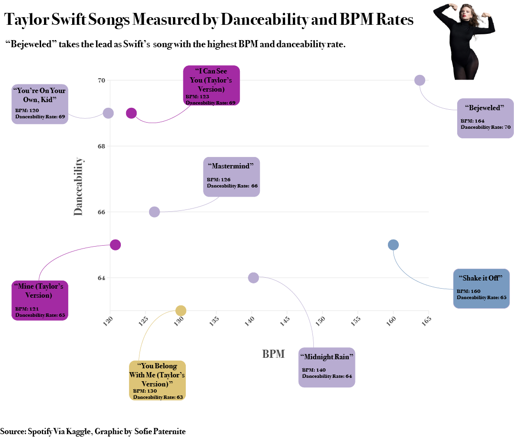

Why Swift?
“Swift’s accomplishments as an artist—culturally, critically, and commercially—are so legion that to recount them seems almost beside the point. As a pop star, she sits in rarefied company, alongside Elvis Presley, Michael Jackson, and Madonna; as a songwriter, she has been compared to Bob Dylan, Paul McCartney, and Joni Mitchell. As a businesswoman, she has built an empire worth, by some estimates, over $1 billion” (Time).
Let’s take a look at her most streamed songs of 2023.
Now that we have seen her top streamed songs in the last year, let’s compare that streaming data to the danceability rate of each Swift song.
When exercising, it’s important to know our maximum heart rates in order to understand what BPM is needed to break a sweat and have an effective workout. Let’s take a look at what the maximum heart rate is by age group when exercising.
Now, let’s compare that data to each genre of music, and see the ranges of each genre’s BPM.
Using all this data combined, we can look at the danceability rate and BPM of Swift’s songs side by side and determine which songs are within range of maximum heart rate while exercising, how they relate to other genres of music, and which songs have the highest BPM and danceability rate.
From all this data, we can conclude that these eight songs should be added to your workout playlist should you choose dance or cardio as your main form of exercise.